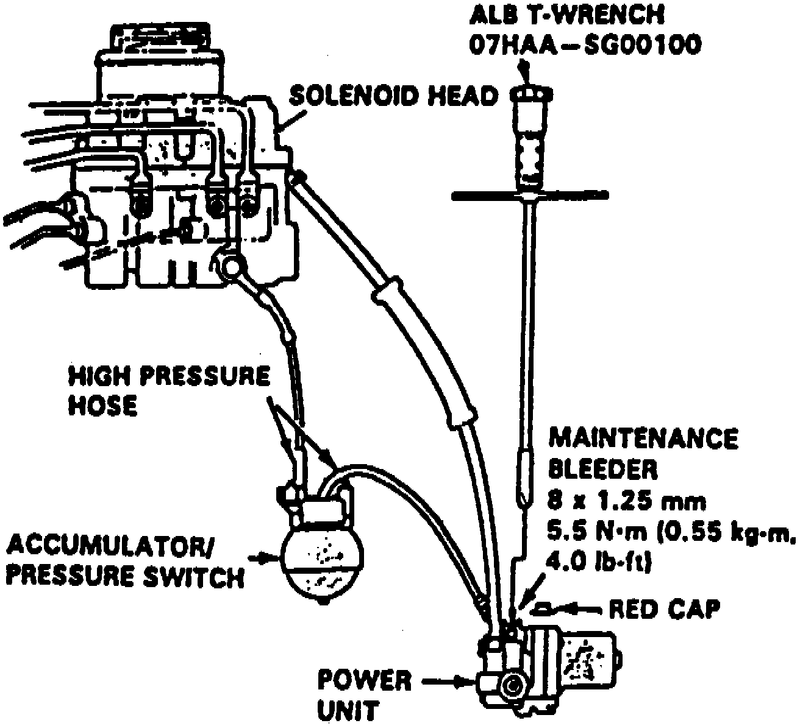

Relieving Accumulator/Line Pressure
Fig. 93 System Air Bleed:

1. Drain brake fluid from master cylinder and modulator reservoir.
2. Remove red bleeder cap from power unit, Fig. 93.
3. Install ABS T-wrench No. 07HAA-SG00100 or equivalent to bleeder screw at about 90° to collect high pressure fluid in reservoir. Turn T-wrench one complete turn to drain brake fluid.
4. Torque bleeder screw to 4 ft. lbs., then discard fluid and install red bleeder cap.